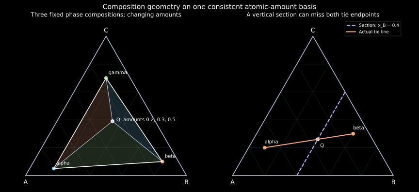

4. Ternary geometry, reaction paths and liquidus projections
An overall alloy can lie on a vertical section while neither of its equilibrium phase compositions lies on that section. Drawing a horizontal line across the displayed two-phase field then connects the wrong points. The extra component has not merely made the picture more crowded: it has changed which geometric constructions contain the information needed for a conservation calculation.
Complete local transcripts of substantive lessons 6–8 were read sequentially. They develop ternary composition coordinates, isothermal sections, extended and emergent phases, tie triangles, vertical sections, reaction classes and liquidus projections, ending with Sn–Ag–Cu solidification. The exact fractions, synthetic diagrams and interactive mixture explorer below are original constructions. The solder balance uses a separately identified NIST calculated table. Uninspected board formulas and the recording's numerical solder-path readings are not presented as independently verified measurements.
4.1 Three components need two independent composition coordinates L6 · 00:47
At fixed temperature and pressure, a ternary composition can be written as a vector $\mathbf x=(x_A,x_B,x_C)^T$, with each entry nonnegative and $x_A+x_B+x_C=1$. Unless stated otherwise, $x$ denotes atomic fraction and the corresponding phase amounts count moles of atoms. Only two entries are independent; the third is their complement. Geometrically, admissible compositions form a two-dimensional simplex, a triangle.
Choose equilateral-triangle vertices A at $(0,0)$, B at $(1,0)$ and C at $(1/2,\sqrt3/2)$. Coordinates here are dimensionless plotting coordinates, not spatial positions of atoms. A composition is represented by their weighted mean:
The vertices are pure components. An edge has one absent component: BC means $x_A=0$, for example. Lines of constant $x_A$ are parallel to BC, because fixing the weight of vertex A leaves only the relative weights of B and C to vary. The analogous statement holds cyclically. This derives the lecture's parallel-line reading rule without relying on where an illustrator happens to place the tick labels.
At $(x_A,x_B,x_C)=(0.40,0.30,0.30)$, equation (4.1) gives $u=0.45$ and $v=0.15\sqrt3$. Inverting recovers the same three fractions. A different orientation of the triangle changes the Cartesian formulas but does not change its composition. Always identify the labelled pure-component vertices and check that the three readings sum to one.
A rectangular plot of $x_A$ against $x_B$ is also possible, but only its region $x_A\geq0$, $x_B\geq0$, $x_A+x_B\leq1$ is admissible. The equilateral representation treats all three constituents symmetrically and makes their complements easy to see. It has not created a third independent composition variable.
Mass fractions form another composition simplex, but atomic-to-mass conversion generally changes a point's location. For molar masses $M_i$, $w_i=x_iM_i/\sum_jx_jM_j$. The map is not generally the same affine map as (4.1). Area ratios calculated in an atomic-fraction triangle yield phase atomic-amount fractions; they cannot simply be relabelled as phase mass fractions.
4.2 A section and a projection retain different information L6 · 08:39
Restore temperature as a vertical coordinate above the composition triangle while holding pressure fixed. The resulting state space is a triangular prism: two independent composition coordinates plus temperature. The three side faces are the three binary temperature–composition diagrams. Knowing those sides does not specify the interior uniquely.
An isothermal section cuts the prism at one temperature. Its coordinates are compositions, and its phase fields refer to that same temperature everywhere. A vertical section, often called an isopleth, cuts through a chosen line of overall compositions while temperature varies. A liquidus projection instead projects a temperature-dependent liquidus surface onto the composition triangle. It may contain temperature contours and primary-solid fields. It is not one isothermal slice.
The recording illustrates how an isothermal line through a binary side becomes one edge of a ternary isothermal section. A phase field touching that side may continue into the interior as the third component dissolves. But a section through a single-phase liquid region must not be confused with a tie line: a tie line specifically connects coexisting phase compositions, whereas an arbitrary constant-temperature line can pass through many unrelated regions.
These representations answer different questions. An isothermal section with its tie information can give phase compositions and amounts at a specified temperature. A vertical section can show where the assemblage changes along the specified overall-composition path, but its horizontal intersections usually do not give the coexisting compositions. A liquidus projection can identify the first equilibrium solid and the liquidus temperature when contours are available, but it does not give every subsequent phase amount by itself.
4.3 Adding a component can extend a phase or introduce a new one L7 · 00:45
The lecture calls a phase extended when it continues from a lower-order composition space into a higher-order one. A unary crystal can accept another constituent while retaining its phase structure, forming a binary solution; it can also accept a third constituent and extend into a ternary field. An emergent binary or ternary phase appears in a combination of constituents rather than merely continuing a stable field on the lower-order boundary. These labels describe the relation between stability fields in the selected diagrams. They are not additional conservation laws.
A binary line compound A C$_2$ has an ideal atomic composition $(1/3,0,2/3)$ on the AC edge. At one temperature it is a point in composition space, even though its fixed-composition field may appear as a vertical line on a binary temperature–composition diagram. If B enters its structure, the allowed composition set can acquire width or a line of extension. That geometry depends on the permitted substitutions.
For example, consider the explicit site model $(A,B)_1(C)_2$: one fully occupied sublattice accepts A or B, while the other has two C sites. If the first sublattice's B site fraction is $y$, then
The composition traces a line of constant $x_C$. The sublattice multiplicity ratio stays $1:2$, but the elemental A:C ratio changes as A is replaced. Preserving the site model is not the same as preserving the original A:C chemical ratio.
If B may instead replace C, the model $(A)_1(C,B)_2$ has $x_A=1/3$, $x_B=2y/3$ and $x_C=2(1-y)/3$. Allowing substitution on both sublattices introduces two occupation variables and can generate a two-dimensional composition set. These statements identify admissible model compositions; free energies and competing phases still decide the actual stable homogeneity range. A broad geometric site capacity is not evidence that all its compositions form a stable phase.
A ternary compound ABC can lie near the triangle centre without being predictable from any stable binary compound. Conversely, several phases can coexist near that centre without any new ternary compound. Phase count, chemical formula, crystal structure and component count must remain distinct. The next construction shows why even complete information about all three binary boundaries cannot fix a ternary interior.
4.4 An exact counterexample to reconstructing the interior from the edges
Consider an original hypothetical molar-energy branch at one fixed temperature and pressure, with
This deliberately sparse model is not an assessed alloy. On every binary edge, one component fraction vanishes, so $g_\lambda=0$ for every value of $\lambda$. Every model in the family therefore gives exactly the same branch on all three edges. At the equimolar centre, however, $g_\lambda=\lambda/27$. Taking $\lambda=+2700$ or $-2700$ J/mol gives $+100$ or $-100$ J/mol there while preserving identical binary data.
The stability difference can be proved without plotting. For positive $\lambda$, the homogeneous central composition has positive energy, whereas an equal-amount mixture of pure A, B and C has the same overall composition and zero energy. The homogeneous centre cannot be globally stable within those admitted states. For negative $\lambda$, the arithmetic–geometric mean inequality gives $x_Ax_Bx_C\leq1/27$, so $g_\lambda\geq\lambda/27$. The homogeneous centre attains this global minimum. Any phase mixture averages energies no smaller than it and cannot lower the central energy further. Thus these edge-identical models make different stability predictions at the centre.
This is an information argument: a term that vanishes on all measured boundaries is unidentifiable from those boundaries alone. It does not say that every real ternary needs the same term, or that extrapolation is useless. It explains why interior ternary data and model assumptions can matter even after the constituent binaries have been carefully assessed.
4.5 A ternary two-phase field needs a family of tie lines L7 · 10:49
Let two equilibrium phase compositions at fixed temperature and pressure be $\mathbf x^\alpha$ and $\mathbf x^\beta$. If the overall composition lies on their tie line, component conservation reads
The same fraction must satisfy all three component balances. Only two concentration coordinates are independent, but the unused balance remains a valuable check. If A gives a fraction different from B beyond the stated uncertainty, the selected endpoints, overall composition or fraction basis is inconsistent.
The affine map (4.1) preserves straight-line interpolation. Therefore the amount fractions are the opposite length ratios along this particular tie line. The line can point in any direction in the triangle. Unlike the ordinary binary two-phase branch at fixed temperature, a ternary two-phase field generally contains a family of tie lines with differing endpoint pairs. Moving the overall composition across the field can change both phase compositions as well as amounts.
The phase boundaries alone do not specify which endpoint on one branch pairs with which endpoint on another. NIST's ternary equilibrium-data documentation distinguishes binodal boundary data from paired tie-line compositions. That distinction is operationally important: digitizing the outline of a two-phase field does not recover its complete coexistence pairing.
4.6 A tie triangle is a three-component conservation problem L7 · 11:25
At a fixed-temperature ternary three-phase equilibrium, the three phase compositions form the vertices of a tie triangle, provided they are noncollinear. An overall composition inside it is a nonnegative weighted mean of these fixed endpoints. Write the endpoint vectors as columns of a matrix $X$:
Since each column and $\bar{\mathbf x}$ sum to one, the component equations already imply $f_\alpha^{(n)}+f_\beta^{(n)}+f_\gamma^{(n)}=1$. Adding that sum as a fourth independent equation would overcount constraints. Noncollinearity gives an invertible matrix and unique amounts; a negative solution means that the overall composition lies outside this chosen triangle. It is not permission to retain a negative phase amount.
Use the stipulated atomic compositions
| Phase | $x_A$ | $x_B$ | $x_C$ |
|---|---|---|---|
| $\alpha$ | 0.80 | 0.15 | 0.05 |
| $\beta$ | 0.10 | 0.80 | 0.10 |
| $\gamma$ | 0.15 | 0.15 | 0.70 |
For $\bar{\mathbf x}=(0.265,0.345,0.390)^T$, the unique solution is $(f_\alpha^{(n)},f_\beta^{(n)},f_\gamma^{(n)})=(0.20,0.30,0.50)$. Check A explicitly: $0.20(0.80)+0.30(0.10)+0.50(0.15)=0.265$. B gives $0.03+0.24+0.075=0.345$ and C gives $0.01+0.03+0.35=0.390$. For 10 mol atoms, the phases contain 2, 3 and 5 mol atoms respectively. No densities have been supplied, so these are not volume fractions.
The same result has an area construction. If Q is the overall point and $[PQR]$ denotes an unsigned triangle area, then
To derive the first identity, hold the base $\beta\gamma$ fixed. Area is proportional to the perpendicular distance from the remaining vertex to that base. Along the line from $\alpha$ through Q to its intersection D with $\beta\gamma$, this height ratio is $QD/\alpha D$. The affine balance gives exactly that opposite-length ratio for the $\alpha$ amount. The other two follow cyclically. Equivalently, Cramer's rule replaces a vertex column by Q in the oriented area determinant. All three ratios are nonnegative inside the triangle and sum to one.
This is a composition-space area ratio. It is unrelated to the area fraction of a polished specimen micrograph. The triangle represents conserved chemical proportions, not the physical spatial arrangement of its phases.

Move the amounts while keeping the phases fixed
Move the relative atomic amounts of the three stipulated phases. The controls are normalized to sum to one. This changes the overall composition, not the phase endpoints. It does not calculate which phases are stable.
Normalized alpha:
Normalized beta:
Normalized gamma:
Overall atomic composition: A 26.5%, B 34.5%, C 39%.
4.7 A vertical slice generally cuts across tie lines L7 · 15:20
Take another stipulated equilibrium pair, $\mathbf x^\alpha=(0.70,0.10,0.20)$ and $\mathbf x^\beta=(0.10,0.60,0.30)$. A mixture containing 0.40 of its atomic amount in $\alpha$ and 0.60 in $\beta$ has overall $\bar{\mathbf x}=(0.34,0.40,0.26)$. The fixed-$x_B=0.40$ section contains this overall point. Neither endpoint satisfies that condition: their B fractions are 0.10 and 0.60.
Thus the actual tie line crosses the section at Q while leaving the section in both directions. A horizontal line drawn across a temperature–composition display of that section cannot recover these two off-section endpoints. The display may correctly label a two-phase region without furnishing either phase composition. This is a geometric loss of information, not a failure of the lever rule.
For a more general section defined by an affine condition $\mathbf a^T\mathbf x=d$, the overall composition satisfies that condition if the weighted deviations cancel. It does not follow that each phase separately obeys it. To use the displayed section as a true binary-style balance diagram, all relevant coexistence endpoints must lie within the same section over the range being used. One tie line that accidentally lies in the plane is not sufficient evidence for every other temperature.
Terminology needs an explicit convention. The recording distinguishes ordinary off-tie-line “pseudo-binary” sections from tie-line-containing “quasi-binary” sections. In contrast, the CompuTherm manual, §3.3.4, calls the special tie-line-containing isopleth a pseudo-binary section. State which condition actually holds rather than decide applicability from the prefix. The tests are endpoint containment, a consistent composition coordinate, and a conserved fraction basis.
4.8 Classify a reaction by its phases and balance, not the shape alone L8 · 00:38
The lecture returns to binary diagrams to build a vocabulary for invariant reactions. A horizontal feature in an ordinary fixed-pressure binary diagram is a useful clue, but the labels and neighbouring fields decide what it represents. Different axis orientation, a narrow phase field, or a line-compound approximation can make a familiar pattern look skewed. A schematic V shape is not an independent definition.
| Reaction type on cooling | Phase pattern | Distinction to retain |
|---|---|---|
| Eutectic | $L\to\alpha+\beta$ | One liquid gives two solids. |
| Peritectic | $L+\alpha\to\beta$ | Liquid and one solid contribute to a different solid. |
| Monotectic | $L_1\to L_2+\alpha$ | The two liquids have distinct equilibrium compositions. |
| Eutectoid | $\alpha\to\beta+\gamma$ | Solid-state analogue of one phase giving two products. |
| Peritectoid | $\alpha+\beta\to\gamma$ | Two solids contribute to a third solid. |
| Monotectoid | $\alpha_1\to\alpha_2+\beta$ | The parent and one product are composition branches of the same underlying solid structure. |
| Syntectic | $L_1+L_2\to\alpha$ | Two liquids contribute to one solid. |
The arrows describe the cooling direction and the reverse transformation can occur on heating. The coefficients needed for an amount balance are not shown in this phase-pattern notation. A peritectic product composition must be a nonnegative weighted mean of the two reactant compositions on a consistent conserved basis. If a proposed reaction fails that check, its arrows or endpoint assignments are wrong regardless of how convincing the sketch looks.
For example, let a binary liquid have B amount fraction 0.20 and a solid $\alpha$ have 0.80. Forming a product $\beta$ at 0.50 requires equal atomic amounts of these reactants: $0.50=r(0.20)+(1-r)(0.80)$ gives $r=1/2$. A proposed product at 0.90 cannot be made solely from these two compositions because it lies outside their convex interval. This does not determine the reaction temperature or its stability; it is a necessary chemical-conservation test.
Congruent melting converts a solid to liquid of the same composition at the relevant equilibrium point. It is not a three-phase eutectic or peritectic merely because it happens at a definite temperature. An order–disorder transformation changes chemical occupations over a parent site structure and likewise needs its own phase-model description. Whether it is continuous or first order is a physical property to establish, not something determined solely by adding a prime to a phase label.
The recording's Al–Ni and Al–Zr examples train recognition of these patterns in crowded diagrams. Their spoken formula recognition is imperfect, so no uninspected list of board reaction formulas is reproduced here. The transferable procedure is to identify each labelled phase, establish the coexistence temperature and compositions from the actual diagram, then check which phases appear and disappear under the specified path and whether the conserved constituents balance.
4.9 A liquidus projection is a topographic map of first-solid formation L8 · 16:42
In a simple ternary solidification topology, the liquidus temperature is a surface $T_l(x_A,x_B)$ above the composition triangle. Above it the stable state is entirely liquid; crossing it permits an incipient solid. Intersecting that surface with a constant-temperature plane produces a contour. Projecting many such contours down onto the triangle gives the topographic representation described in the recording.
A primary-solid field tells which solid first coexists with liquid at the liquidus. It is not the entire low-temperature assemblage throughout that projected region. On a boundary between primary fields, liquid can coexist with two solids. Such three-phase coexistence can follow a temperature-varying valley in a ternary system. At a ternary eutectic, liquid and three solids coexist at a particular temperature at fixed pressure: $L\rightleftharpoons\alpha+\beta+\gamma$. This is four-phase equilibrium, distinct from a three-solid tie triangle at a fixed temperature below the reaction.
The liquid composition can evolve along a valley as more solid forms. A complete solidification path still needs composition balances, the actual coexistence information and kinetic assumptions. A projection alone does not guarantee that all necessary tie lines are known, and its contours are not a clock. A path that retains each earlier solid without diffusion differs from one that continually re-equilibrates it. The later Scheil and diffusion chapters will treat these constraints explicitly.
The composition of accumulated solid can also be a weighted average of several solid phases and earlier increments. It need not equal the composition of any one actual phase. Drawing a line from that average to the remaining liquid can express a total-solid/liquid balance, but that constructed average point is not automatically an equilibrium phase endpoint or a new stable phase.
4.10 A solder example separates phase equilibrium, data and reaction extent L8 · 22:08
The recording follows a Sn-rich Sn–Ag–Cu example towards a ternary eutectic. A pure-Sn approximation can simplify an initial balance when the neglected solubilities are sufficiently small for the purpose. But after another solid joins, an average accumulated-solid composition differs from the composition of pure Sn. At the eutectic, arriving at the liquid's eutectic composition does not imply that its amount instantly vanishes. The remaining liquid transforms as heat is removed and the reaction extent changes.
The primary Moon et al. NIST solder study, manuscript pp.1–4, identifies the eutectic phases as liquid, (Sn), Ag$_3$Sn and Cu$_6$Sn$_5$. Its abstract reports a measured eutectic temperature of $217.2\pm0.2$ °C, with the uncertainty stated as $2\sigma$, and a fitted thermodynamic result of 216.3 °C. These are distinct measured and calculated values. The experimental discussion explains why small primary intermetallic amounts make liquidus signals weak, and why undercooling complicates cooling observations. A clear calculated contour therefore does not remove the measurement problem it represents.
For an independently reproducible numerical balance, use the legacy NIST calculated Ag–Cu–Sn table. At its listed Sn-rich eutectic, the mass percentages are as follows. This table is a specific historical thermodynamic description, with a listed temperature of 215.9 °C; it is not the same fitted result as the preceding paper and is not asserted to be the current best assessment.
| Phase or liquid | Mass % Ag | Mass % Cu | Mass % Sn |
|---|---|---|---|
| Liquid | 3.73 | 0.85 | 95.42 |
| Ag$_3$Sn | 73.17 | 0 | 26.83 |
| Cu$_6$Sn$_5$ | 0 | 39.07 | 60.93 |
| (Sn) | 0.07 | 0 | 99.93 |
Let a unit mass of that liquid convert completely into the three listed solids, retaining their tabulated limiting compositions. Applying (4.5) on a mass basis gives
First obtain the Cu-bearing fraction directly as $0.0085/0.3907$. The Ag balance is $0.7317 f_{\mathrm{Ag_3Sn}}^{(m)}+0.0007 f_{\mathrm{(Sn)}}^{(m)}=0.0373$; use the sum-to-one constraint to solve it. The exact rational code checks all three component balances. The displayed digits are arithmetic on rounded table inputs, not corresponding experimental precision. They describe the all-solid reaction-product limit; while liquid remains, four phase amounts require an additional extent or enthalpy constraint.
“(Sn)” denotes the phase, whereas Sn denotes a chemical component. Ag$_3$Sn and Cu$_6$Sn$_5$ can be present alongside (Sn) without making the system a six-component problem. Their formulae are combinations of the same three conserved elements. Keeping phase names and component names separate is just as necessary here as in the first sugar–water balance.
4.11 Exact geometry and an independently identified data balance
The following standard-library program solves three-component balances by rational Gaussian elimination. It recovers the declared amounts on all 231 points of a twentieth-step fraction grid, verifies the area ratios, and checks the vertical-section counterexample. It then calculates the three-solid mass balance from the cited historical NIST table and checks the boundary-invisible ternary energy term. It assumes the supplied endpoints are the relevant ones; it does not determine phase stability from geometry.
"""Exact barycentric balances on declared atom or mass bases."""
from fractions import Fraction as F
from math import sqrt
def solve3(columns, rhs):
rows=[[F(columns[j][i]) for j in range(3)]+[F(rhs[i])] for i in range(3)]
for j in range(3):
pivot=next((i for i in range(j,3) if rows[i][j]),None)
if pivot is None:
raise ValueError('Degenerate tie triangle: amounts not uniquely determined')
rows[j],rows[pivot]=rows[pivot],rows[j]
scale=rows[j][j]
rows[j]=[v/scale for v in rows[j]]
for i in range(3):
if i!=j:
scale=rows[i][j]
rows[i]=[a-scale*b for a,b in zip(rows[i],rows[j])]
return tuple(rows[i][3] for i in range(3))
def weighted(columns, fractions):
return tuple(sum(f*v[i] for v,f in zip(columns,fractions)) for i in range(3))
def cartesian(x):
return float(x[1]+x[2]/2),sqrt(3)*float(x[2])/2
def twice_area(p,q,r):
return (q[0]-p[0])*(r[1]-p[1])-(q[1]-p[1])*(r[0]-p[0])
if __name__=='__main__':
phases=[(F(4,5),F(3,20),F(1,20)),
(F(1,10),F(4,5),F(1,10)),
(F(3,20),F(3,20),F(7,10))]
amounts=(F(1,5),F(3,10),F(1,2))
overall=weighted(phases,amounts)
assert overall==(F(53,200),F(69,200),F(39,100))
assert solve3(phases,overall)==amounts
p,q,r=map(cartesian,phases);x=cartesian(overall)
total=twice_area(p,q,r)
area_amounts=[twice_area(x,q,r)/total,twice_area(p,x,r)/total,
twice_area(p,q,x)/total]
assert all(abs(a-float(f))<1e-14 for a,f in zip(area_amounts,amounts))
checks=0
for i in range(21):
for j in range(21-i):
f=(F(i,20),F(j,20),F(20-i-j,20))
assert solve3(phases,weighted(phases,f))==f
checks+=1
outside=solve3(phases,(1,0,0))
assert min(outside)<0
print('Synthetic overall (A,B,C):',*[str(v) for v in overall])
print('Recovered phase atomic-amount fractions:',*[str(v) for v in amounts])
print('Area ratios:',*[f'{v:.6f}' for v in area_amounts])
print('Exact grid reconstructions:',checks)
# A vertical section x_B=.4 contains the bulk but neither tie endpoint.
ends=[(F(7,10),F(1,10),F(1,5)),(F(1,10),F(3,5),F(3,10))]
bulk=weighted(ends,(F(2,5),F(3,5)))
assert bulk==(F(17,50),F(2,5),F(13,50))
assert all(v[1]!=bulk[1] for v in ends)
print('Off-section tie-line bulk:',*[str(v) for v in bulk])
# NIST legacy calculated eutectic table, Ag/Cu/Sn MASS fractions.
solids=[(F(7317,10000),F(0),F(2683,10000)),
(F(0),F(3907,10000),F(6093,10000)),
(F(7,10000),F(0),F(9993,10000))]
liquid=(F(373,10000),F(85,10000),F(9542,10000))
products=solve3(solids,liquid)
assert all(f>0 for f in products) and sum(products)==1
assert weighted(solids,products)==liquid
print('NIST table all-solid product MASS fractions (Ag3Sn,Cu6Sn5,Sn):',
*[f'{float(v):.9f}' for v in products])
# Ternary term invisible on every binary boundary.
center=(F(1,3),)*3
for edge in [(F(1,4),F(3,4),F(0)),(F(0),F(1,4),F(3,4)),
(F(3,4),F(0),F(1,4))]:
assert F(2700)*edge[0]*edge[1]*edge[2]==0
assert F(2700)*center[0]*center[1]*center[2]==100
print('Center ternary energy for lambda=+/-2700 J/mol: +/-100 J/mol')
print('All conservation, area, section and boundary checks passed.')Synthetic overall (A,B,C): 53/200 69/200 39/100 Recovered phase atomic-amount fractions: 1/5 3/10 1/2 Area ratios: 0.200000 0.300000 0.500000 Exact grid reconstructions: 231 Off-section tie-line bulk: 17/50 2/5 13/50 NIST table all-solid product MASS fractions (Ag3Sn,Cu6Sn5,Sn): 0.050089233 0.021755823 0.928154944 Center ternary energy for lambda=+/-2700 J/mol: +/-100 J/mol All conservation, area, section and boundary checks passed.
4.12 Problems with complete solutions
1. Recover the third component. An atomic-composition point has $x_A=0.28$ and $x_B=0.18$. Find $x_C$ and its coordinates in (4.1). What does the BC edge mean?
Solution
$x_C=1-0.28-0.18=0.54$. Then $u=0.18+0.27=0.45$ and $v=0.27\sqrt3$. Inversion gives $x_A=1-0.45-0.27=0.28$ and $x_B=0.45-0.27=0.18$. On BC, $x_A=0$ while B and C can vary with their sum fixed at one. A line parallel to BC at nonzero height towards A has a constant positive A fraction; it is not another binary BC system.
2. Change the basis before interpreting an area. A phase has atomic fractions $(1/2,1/4,1/4)$ and stipulated atomic molar masses $(10,20,40)$ g/mol. Find its mass fractions. Does the same plotted triangle point represent both?
Solution
The unnormalized masses per mole of atoms are $(5,5,10)$ g, totaling 20 g. The mass fractions are $(1/4,1/4,1/2)$. In the atomic triangle the point has $u=3/8$, $v=\sqrt3/8$; in the mass triangle it has $u=1/2$, $v=\sqrt3/4$. Their locations differ because unequal molar masses change the normalization. An atomic-fraction area construction cannot simply be labelled a mass-fraction result.
3. Check a tie line with all components. Use the two endpoints in Section 4.7. At overall $(0.34,0.40,0.26)$, recover $f_\alpha^{(n)}$ separately from A, B and C. Is the tie line contained in the section $x_B=0.40$?
Solution
A gives $(0.34-0.10)/(0.70-0.10)=0.40$. B gives $(0.40-0.60)/(0.10-0.60)=0.40$. C gives $(0.26-0.30)/(0.20-0.30)=0.40$. All three agree. Neither endpoint has B fraction 0.40, so the tie line crosses the section at the overall point without lying in it. This example meets the chemical balances while disproving the attempted horizontal-section endpoint construction.
4. Interpret a tie-triangle edge. For the phase compositions in Section 4.6, choose amounts $(0,1/4,3/4)$. Find the overall atomic composition and state what a zero $\alpha$ amount means geometrically. Does it invalidate the other endpoint compositions?
Solution
The weighted composition is $(0.025+0.1125,0.20+0.1125,0.025+0.525)=(0.1375,0.3125,0.55)$. It lies on the $\beta\gamma$ edge of the tie triangle. The subtriangle opposite $\alpha$ has zero area, so its amount is zero. The other two endpoints remain the specified coexistence compositions. The $\alpha$ endpoint can describe an incipient phase on the boundary even when that phase is absent in finite amount.
5. Preserve sites, not an elemental ratio. In model $(A,B)_1(C)_2$, take first-sublattice B occupancy $y=0.30$. Find all atomic fractions and the A:C ratio. Does it remain $1:2$?
Solution
Equation (4.2) gives $x_A=0.70/3=7/30$, $x_B=0.30/3=1/10$ and $x_C=2/3$. They sum to one. The elemental A:C ratio is $(7/30):(20/30)=7:20$, whereas the site multiplicity ratio remains $1:2$. The total first-sublattice species A+B still has ratio $1:2$ to C. Substituting B has replaced A atoms; retaining the original elemental ratio would violate that stated model.
6. Balance a proposed peritectic. A liquid has $x_B=0.20$, a reactant solid has $x_B=0.80$, and the product has $x_B=0.65$. Find the required atomic-amount proportions of the reactants. What fails for product $x_B=0.10$?
Solution
Let $r$ be the liquid's share of total reactant atomic amount. The balance $0.65=0.20r+0.80(1-r)$ gives $r=1/4$, so the solid supplies $3/4$. The product at 0.10 would require $r=(0.80-0.10)/0.60=7/6>1$ and a negative solid share. It lies outside the reactant interval and cannot be formed solely from those two compositions. Conservation is necessary; the admissible 0.65 balance alone still does not prove equilibrium or choose its temperature.
7. Test the information in the binary edges. In (4.3), what is $g_\lambda$ at $(1/2,1/2,0)$ and at $(1/3,1/3,1/3)$ for $\lambda=2700$ J/mol? Supply a state of lower energy than the homogeneous central state at the same overall composition.
Solution
On the edge the product contains zero and the energy is zero. At the centre it is $2700/27=100$ J/mol. Equal atomic amounts of pure A, pure B and pure C have the same overall composition and zero average energy, so they are lower by 100 J/mol. Every binary edge would still show zero if the sign of $\lambda$ changed; binary boundary data alone do not identify the coefficient or the central stability prediction.
8. Do not confuse reaching a eutectic with finishing it. A ternary liquid reaches the eutectic composition while the specimen is 40% solid by mass. Must the remaining 60% disappear immediately? How many independent extensive balances constrain four phase amounts at the invariant temperature?
Solution
No. The remaining liquid can transform at the invariant temperature as heat is removed; arrival fixes its composition, not zero remaining amount. Four phase mass fractions have one normalization and two independent component-composition constraints, giving three independent linear constraints and ordinarily one free extent. Equivalently the three component mass balances already contain normalization. An enthalpy or extent condition is needed to select that amount. After all liquid has transformed, three noncollinear solid endpoints can determine unique product amounts.
9. Identify the kind of map. A composition triangle contains primary-solid labels and contour temperatures that vary across it. Can it be read as a single isothermal three-phase diagram, and can its primary-field boundaries alone specify all later tie lines?
Solution
The varying contour temperatures and primary-solid labels indicate a liquidus projection rather than one isothermal section. They locate first-solid formation and its temperature under the map's assumptions. Later phase compositions and amounts require actual coexistence information at the chosen temperatures and the specified solidification constraints. Primary-field boundaries do not generally contain all that pairing information. A construction based on assumed pure solids must identify and justify that extra approximation.
Sources and provenance
- Prof. K. Guruvidyathri, University of Hyderabad, NPTEL: lesson 6, ternary isothermal sections; lesson 7, extended phases and sections; lesson 8, reactions and liquidus projections. Complete local ASR read; full visual transcription not claimed.
- NIST ternary LLE data definitions: boundary data versus paired coexistence compositions.
- CompuTherm PanPhaseDiagram manual, §3.3.4: its stated pseudo-binary terminology, explicitly distinguished from the recording's convention.
- Moon et al., Experimental and Thermodynamic Assessment of Sn–Ag–Cu Solder Alloys, manuscript pp.1–4: phase identities, measured-versus-fitted temperature and thermal-analysis limitations. Only these portions are relied upon.
- NIST legacy Ag–Cu–Sn calculated table: the exact rounded mass-percentage inputs used in (4.7). The code performs a balance on those inputs, not an independent CALPHAD reassessment.